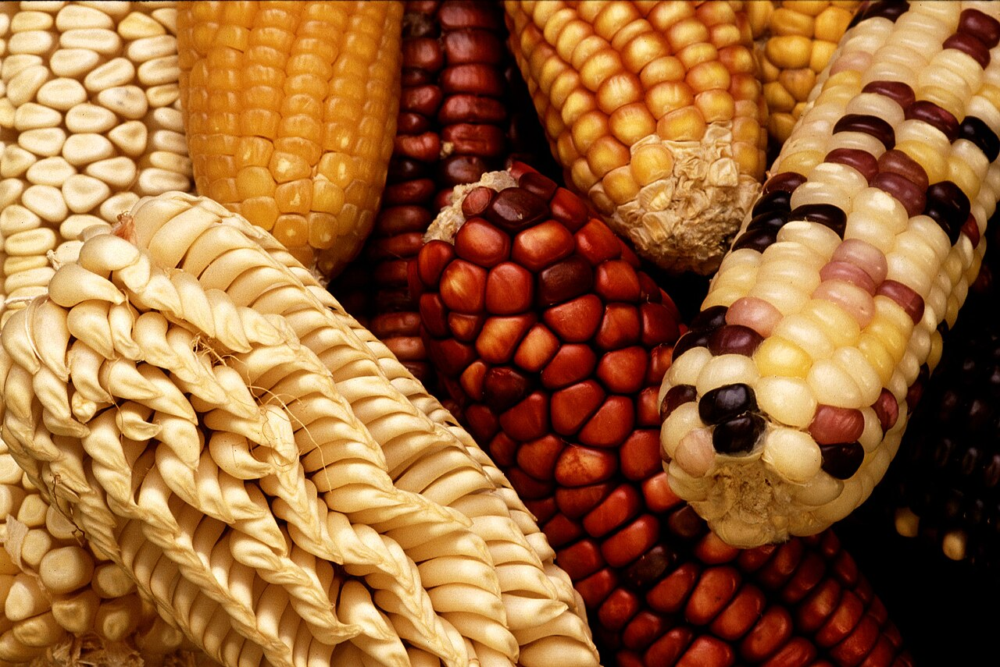
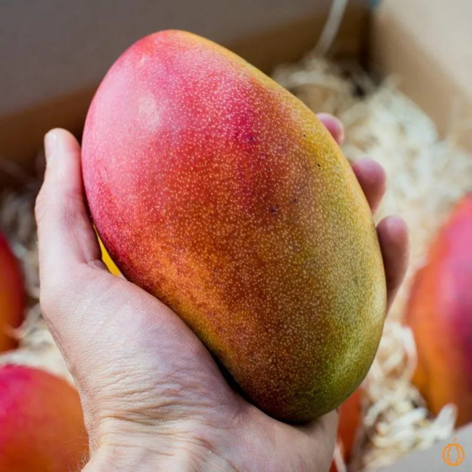
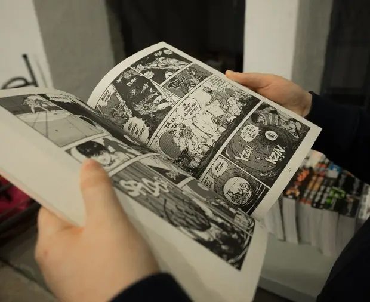
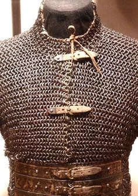
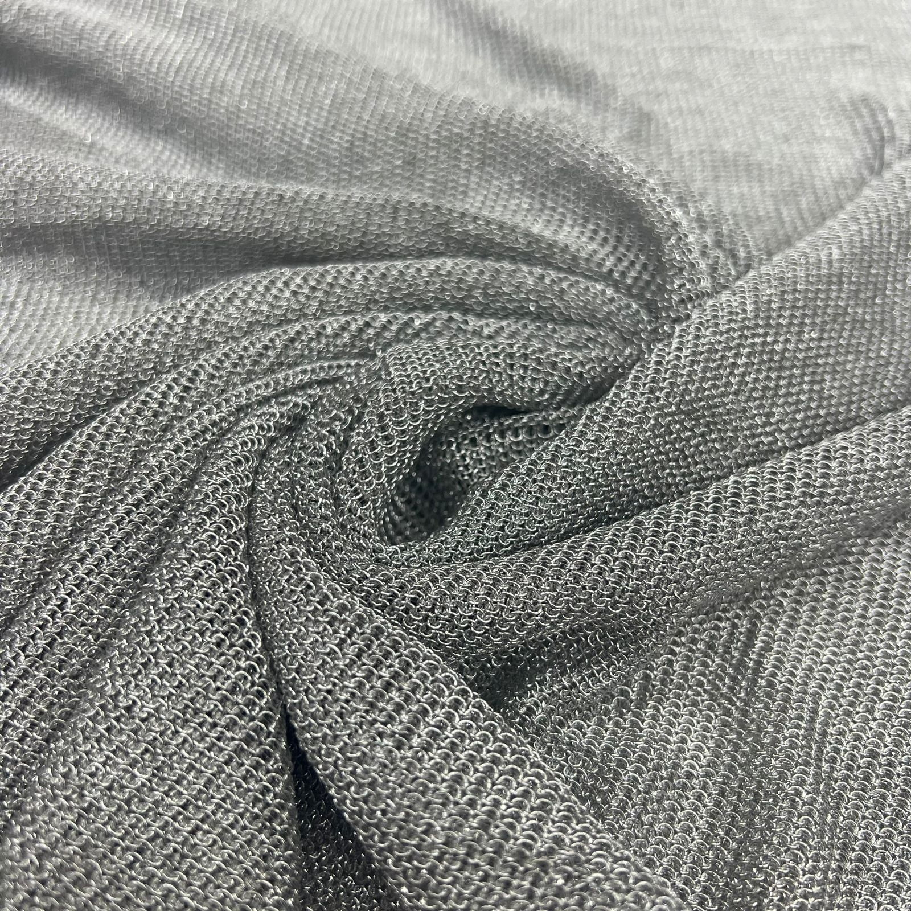

MILHO
O milho é um dos cereais mais cultivados e consumidos no mundo. Ele é uma planta que produz espigas com vários grãos, que podem ser amarelos, brancos ou de outras cores. O milho pode ser consumido cozido, assado ou usado na preparação de alimentos como pipoca, bolo, pamonha, canjica e farinha de milho.
Além de ser um alimento muito importante, o milho também é utilizado na produção de ração para animais e de diversos produtos industriais. Ele é rico em carboidratos e fornece energia para o organismo. Por sua grande variedade de usos, o milho possui grande importância na alimentação e na economia de muitos países.

MANGA


A manga é uma fruta tropical muito apreciada por seu sabor doce, aroma agradável e textura suculenta. Ela possui diferentes variedades e pode ser consumida pura ou utilizada em sucos, vitaminas, sobremesas e saladas. Além de saborosa, a manga contém vitaminas, fibras e outros nutrientes importantes para uma alimentação equilibrada.
O mangá é um tipo de história em quadrinhos originário do Japão. Ele apresenta diversos gêneros, como aventura, comédia, romance, fantasia e ação, podendo ser destinado a diferentes faixas etárias. Os mangás são tradicionalmente lidos da direita para a esquerda e tiveram grande influência na cultura e no entretenimento mundial, inspirando também muitos animes.
Malha
A malha é um tipo de tecido produzido por meio do entrelaçamento de fios, formando uma estrutura geralmente macia, confortável e flexível. Ela pode ser feita de diferentes materiais, como algodão, poliéster ou viscose, e é muito utilizada na fabricação de camisetas, vestidos, blusas e outras peças de roupa.
Uma das principais características da malha é sua capacidade de se adaptar aos movimentos do corpo, proporcionando conforto durante o uso. Por ser versátil e possuir diversos tipos, cores e estampas, a malha é bastante utilizada tanto em roupas do dia a dia quanto em peças esportivas e de moda.


Contato
Preencha os campos abaixo para entrar em contato.